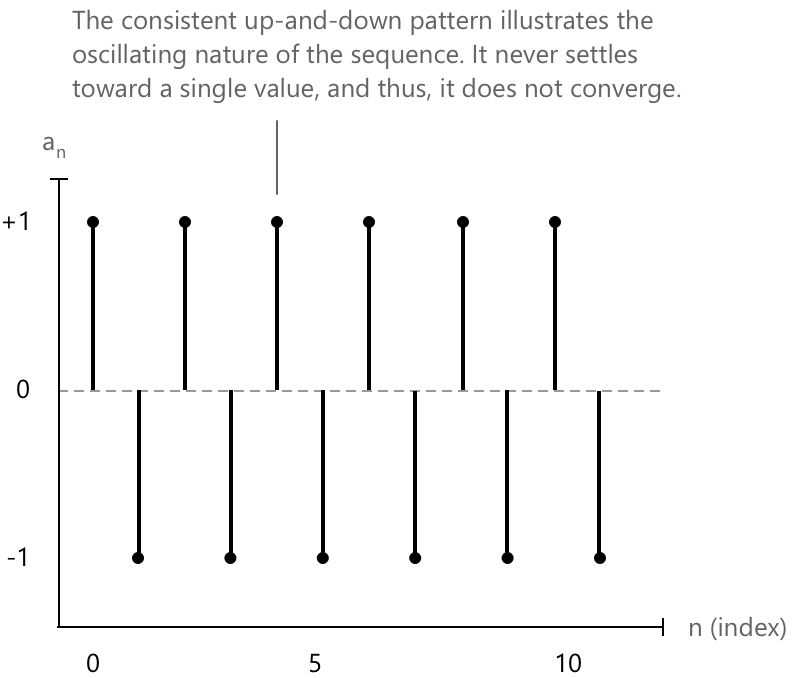
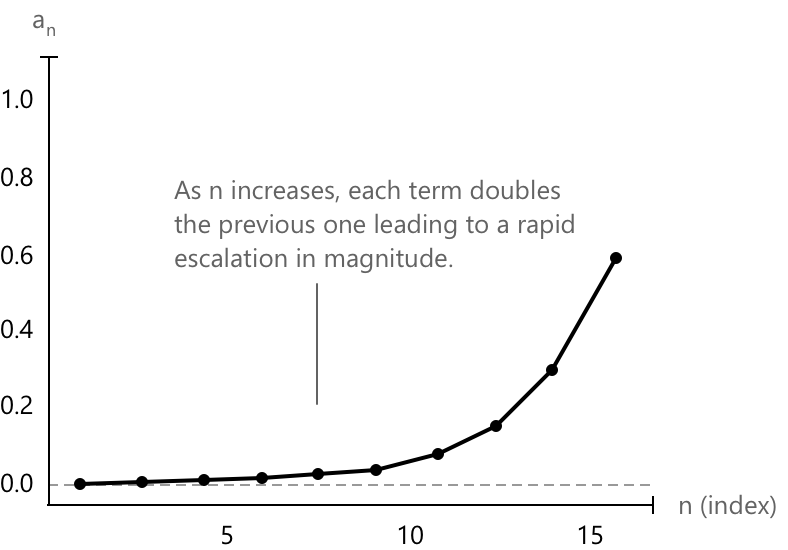

Збіжні та розбіжні послідовності
Поведінка послідовності
Ми ввели послідовності як впорядковану сукупність елементів, кожен з яких відповідає певній позиції, що індексується натуральним числом. Кожній послідовності \( (a_n)_{n \in \mathbb{N}} \) відповідає певна поведінка її членів \( a_n \), яка описує, як вони змінюються зі зростанням індексу \( n \). Аналіз цієї поведінки допомагає визначити, чи збігається послідовність до скінченної границі, розбігається до нескінченності або має коливальний характер.
Збіжний послідовність
Послідовність \( (a_n)_{n \in \mathbb{N}} \) називається збіжною до границі \( \ell \in \mathbb{R} \), якщо для будь-якого \( \varepsilon > 0 \) існує \( n_0 \in \mathbb{N} \) такий, що:
\[ |a_n - \ell| < \varepsilon \quad \text{для всіх } n \geq n_0. \]
У цьому випадку ми пишемо:
\[ \lim_{n \to +\infty} a_n = \ell \quad \text{або} \quad a_n \to \ell \quad \text{при } n \to +\infty. \]
Іншими словами, це означає, що члени послідовності стають дедалі ближчими до числа \( \ell \) зі зростанням \( n \). Незалежно від того, наскільки малим є відступ \( \varepsilon \), починаючи з певного індексу всі члени будуть перебувати на цій відстані від \( \ell \). Наприклад, розглянемо наступну послідовність: \[ a_n = \left( \frac{1}{n}\right)_{n\geq} = \left(1, \frac{1}{2}, \frac{1}{3}, \ldots \right) \]

Зі зростанням \( n \) члени стають дедалі меншими, наближаючись до нуля. Це класичний приклад послідовності, яка збігається до 0. Послідовність називається нескінченно малою, коли її члени стають довільно близькими до нуля зі зростанням індексу і:
\[ \lim_{n \to +\infty} a_n = 0. \]
Границя послідовності \( (a_n)_{n \in \mathbb{N}} \), якщо вона існує, є єдиною.
Приклад
Розглянемо послідовність, задану формулою:
\[ a_n = \frac{n}{n + 2} \]
Ми прагнемо продемонструвати, що ця послідовність збігається до 1 при \( n \to +\infty \), використовуючи формальне означення збіжності.
Щоб довести це, ми повинні показати, що для будь-якого \( \varepsilon > 0 \) існує натуральне число \( n_0 \) таке, що для всіх \( n \geq n_0 \):
\[ \left| \frac{n}{n + 2} - 1 \right| < \varepsilon \]
Спростимо вираз під знаком модуля:
\[ \left| \frac{n}{n + 2} - 1 \right| = \left| \frac{-2}{n + 2} \right| = \frac{2}{n + 2}. \]
Тепер ми хочемо, щоб:
\[ \frac{2}{n + 2} < \varepsilon \]
Розв'язуємо нерівність:
\[ n + 2 > \frac{2}{\varepsilon} \quad \Rightarrow \quad n > \frac{2}{\varepsilon} - 2 \]
Отже, ми можемо визначити:
\[ n_0 = \left\lceil \frac{2}{\varepsilon} - 2 \right\rceil \]
Починаючи з цього моменту, кожен член послідовності перебуває на відстані \( \varepsilon \) від границі \(1.\) Отже, за означенням:
\[ \lim_{n \to +\infty} \frac{n}{n + 2} = 1. \]
Розбіжний послідовність
Послідовність \( (a_n)_{n \in \mathbb{N}} \) називається розбіжною, якщо вона не збігається до скінченної границі. Це може відбуватися наступними способами.
Послідовність розбігається до \( +\infty \), якщо для будь-якого \( M > 0 \) існує індекс \( n_0 \in \mathbb{N} \) такий, що
\[
a_n > M \quad \text{для всіх } n \geq n_0
\]
У цьому випадку ми пишемо:
\[
\lim_{n \to +\infty} a_n = +\infty \quad \text{або} \quad a_n \to +\infty \text{ при } n \to +\infty
\]
Послідовність розбігається до \( -\infty \), якщо для будь-якого \( M < 0 \) існує індекс \( n_0 \in \mathbb{N} \) такий, що
\[
a_n < M \quad \text{для всіх } n \geq n_0
\]
У цьому випадку ми пишемо:
\[
\lim_{n \to +\infty} a_n = -\infty \quad \text{або} \quad a_n \to -\infty \text{ при } n \to +\infty
\]
Обмежена послідовність
Обмежена послідовність — це послідовність чисел, члени якої завжди перебувають у межах певного скінченного проміжку, незалежно від того, наскільки великим стає індекс. Формально, нехай \( {a_n} \) — послідовність. Ми кажемо, що послідовність є обмеженою, якщо існує стала \( M > 0 \) така, що:
\[ |a_n| \leq M \quad \forall n \in \mathbb{N} \]
Ми кажемо, що послідовність \( {a_n} \) обмежена зверху, якщо існує стала \( M \in \mathbb{R} \) така, що:
\[ a_n \leq M \quad \forall n \in \mathbb{N} \]
Ми кажемо, що послідовність обмежена знизу, якщо існує стала \( M \in \mathbb{R} \) така, що:
\[ a_n \geq M \quad \forall n \in \mathbb{N} \]
Коливальна послідовність
Коливальні послідовності є особливим типом обмеженої послідовності. Розглянемо послідовність:
\[ (a_n)_{n \in \mathbb{N}} = ((-1)^n)_{n \in \mathbb{N}} = (+1, -1, +1, -1, +1, -1, \dots) \]
Зі збільшенням індексу \(n\) члени послідовності послідовно чергуються між \(+1\) та \(-1\). Такий тип послідовності не наближається до жодного скінченного значення і називається коливальною послідовністю. Вона не збігається до скінченної границі, а також не розбігається до \( +\infty \) або \( -\infty \), і її члени продовжують коливатися між різними значеннями

Геометрична послідовність
Розглянемо приклад послідовності, що називається геометричною послідовністю, яка може демонструвати різну поведінку залежно від заданого дійсного числа \( q \). Загалом, чисельна послідовність називається геометричною прогресією, коли відношення між кожним членом і попереднім є сталлю. Точніше, геометрична послідовність визначається наступним чином:
\[ a_n := q^n \]
Вона виявляє наступну поведінку:
- Вона розбігається до \( +\infty \), якщо \( q > 1 \).
- Вона є сталою (тобто \( a_n = a_0 \) для кожного \( n \in \mathbb{N} \)), якщо \( q = 1 \), і таким чином \(\lim_{n \to +\infty} a_n = a_0 = 1.\)
- Вона є інфінітезимальною, якщо \( |q| < 1 \), що означає, що члени наближаються до нуля.
- Вона є коливальною (нерегулярною), якщо \( q \leq -1 \), через чергування знаків та необмежений ріст.

Як показано на графіку, при \( q = 2 \) значення геометричної послідовності \( a_n = q^n \) зростають експоненціально. Зі збільшенням \( n \) кожен член подвоює попередній, що призводить до швидкого зростання величини.